تقنية12 دقيقة
القيمة مقابل السعر 2026: iQOO 16 ضد OnePlus 16 ضد HONOR WIN Turbo 2 ضد Xiaomi 18 Pro
أيّ هاتف يمنحك أعلى قيمة مقابل كل يوان في خريف 2026؟ يجتمع هنا ثلاثة هواتف رائدة تشترك في السعر الرسمي الابتدائي نفسه في الصين (¥5,999 لنسخة 12+256GB): iQOO 16 بشاشة 2K 165Hz ومعالج Extreme، وOnePlus 16 ببطارية 9,000mAh وكاميرا رئيسية 200MP، وXiaomi 18 Pro بحجم مدمج 6.4 بوصة وشاشة خلفية وكاميرتين بدقة 200MP. وفي مواجهتها يقف HONOR WIN Turbo 2 كخيار اقتصادي كاسر للأسعار يبدأ من ¥3,199 (سعر الإطلاق الأول لنسخة 8+256GB، و¥3,499 لنسخة 12+256GB) مع بطارية عملاقة بسعة 12,070mAh وشاشة 2K 185Hz. جمعنا هنا المواصفات الرسمية وأحدث الاختبارات الصينية الموثقة حتى 25 أكتوبر 2026 من AnTuTu و三易生活 و新评科技 و充电头网 وCNMO وZOL و驱动中国 و小白测评، مع تقييمات الملّاك.
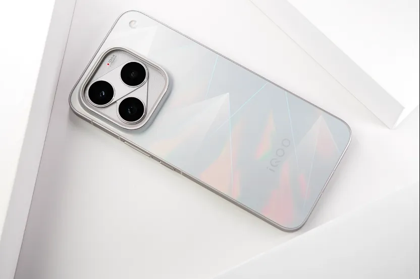

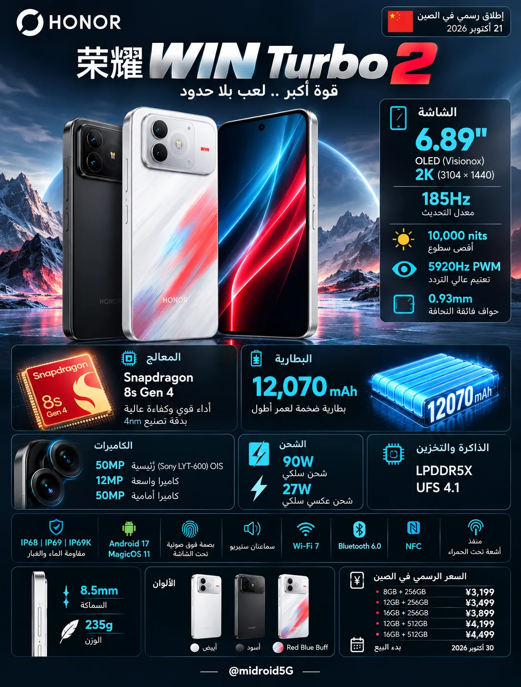

جدول المقارنة الكامل (محدّث حتى 25 أكتوبر 2026)
| المعيار | iQOO 16 | OnePlus 16 | HONOR WIN Turbo 2 | Xiaomi 18 Pro |
|---|---|---|---|---|
| المعالج والشرائح المساندة | Snapdragon 8 Elite Extreme Gen 6 (2nm) + شريحة الألعاب Q4 | Snapdragon 8 Elite Extreme Gen 6 (2nm) + شرائح T3 وG3 وP4 | Snapdragon 8s Gen 4 (4nm) + شرائح للشاشة واللمس والاتصال | Snapdragon 8 Elite Gen 6 العادي (2nm، معالج رسوميات Adreno 845) |
| الذاكرة والتخزين | LPDDR5X Ultra (وUltra Pro في 16+1TB) + UFS 4.1 | LPDDR5X Ultra + UFS 4.1 | LPDDR5X + UFS 4.1 | LPDDR5X + UFS 4.1 |
| الأبعاد والوزن | 163.75 × 76.90 × 8.30–8.55 مم | 222.5–229.8 غرامًا | 161.42 × 76.67 × 8.45–8.55 مم | 217–220 غرامًا (223.9g في 充电头网) | سماكة 8.5 مم، حواف 0.93 مم | 235 غرامًا | 151.8 × 72 × 8.5 مم | 203 أو 208 غرامات |
| الشاشة الرئيسية (والخلفية) | 6.85 بوصة AMOLED مسطحة (Samsung M16، 2K LEAD 2.0)، 3168×1440، 165Hz | 6.78 بوصة LTPO OLED مسطحة (BOE X4)، 2772×1272 (1.5K)، 1–165Hz (185Hz في الألعاب) | 6.89 بوصة OLED مسطحة (Visionox)، 3104×1440 (2K)، 185Hz | 6.4 بوصة LTPO OLED، 2436×1120 (1.5K)، 1–120Hz + شاشة خلفية 2.7 بوصة (912×596، 120Hz) |
| السطوع والتعتيم | رسمي 2,800 شمعة كامل الشاشة (مقاس: 1,142 يدوي و2,749 تحت الشمس في AnTuTu) | تعتيم DC كامل | رسمي 2,000 شمعة HBM و1 شمعة أدنى | 3840Hz PWM (≤70 شمعة) + شبيه DC | رسمي 2,000 شمعة كامل الشاشة و10,000 ذروة | 5920Hz PWM | رسمي 4,000 شمعة ذروة و1 شمعة أدنى | 2160Hz PWM + DC (مع طبقة خصوصية مدمجة) |
| التبريد | غرفة بخار أحادية 8,500 مم² + جل حراري + غرافين 29,453 مم² | نظام 冰河: غرفة بخار 3D VC بمساحة 6,428 مم² + غرافين + جل حراري | تبريد سلبي بدون مروحة داخلية (خلافًا لـ WIN RT 2 وWIN 2) | نظام تبريد سلبي مدمج للهاتف الصغير |
| الكاميرا الرئيسية | 50MP، 1/1.3 بوصة، f/1.88، OIS | 200MP، 1/1.4 بوصة، f/1.6، OIS | 50MP (Sony LYT-600)، 1/2 بوصة، f/1.9، OIS | 200MP، 1/1.28 بوصة، f/1.67، OIS (عدسات Leica) |
| الكاميرا المقرّبة (Telephoto) | 50MP بيريسكوب 3x (73 مم)، OIS | 50MP بيريسكوب 3x، OIS | لا توجد كاميرا مقرّبة | 200MP بيريسكوب 3.2x (75 مم)، ماكرو من 12 سم، OIS |
| الكاميرا الواسعة والأمامية | واسعة 50MP | أمامية 32MP | واسعة 50MP | أمامية 50MP | واسعة 12MP (f/2.2) | أمامية 50MP (f/2.0) | واسعة 50MP | إمكانية السيلفي بالكاميرا الرئيسية عبر الشاشة الخلفية |
| البطارية | 8,400mAh (أحادية الخلية) | 9,000mAh (ثنائية الخلايا 2×4,500) | 12,070mAh (11,790mAh اسمية) | 7,000mAh (النسخة الصينية) |
| الشحن (سلكي / لاسلكي / عكسي) | 100W / 40W لاسلكي / عكسي | 100W (و100W UFCS / 55W PPS) / 50W لاسلكي / 27W عكسي سلكي | 90W سلكي / بلا شحن لاسلكي / 27W عكسي سلكي | 100W سلكي (يدعم 100W PPS) / 50W لاسلكي / 27W عكسي |
| مقاومة الماء ومنفذ USB | IP68 / IP69 | USB 3.2 | IP66 / IP68 / IP69 / IP69K | USB 3.2 | IP68 / IP69 / IP69K | USB 2.0 | IP68 | USB 3.2 |
| AnTuTu V12 | 4,713,915 (AnTuTu) / ~4.76 مليون عادي و5.01 مليون مبرد (三易生活) | 4,890,664 (AnTuTu) / 4,721,338 عادي و5,129,235 مبرد (三易生活) | لم يُختبر بعد (يبدأ بيعه 30 أكتوبر) | 4,572,002 عادي و4,901,360 مبرد (三易生活) / 3,818,907 على AnTuTu 11 (Frandroid) |
| Geekbench 6 (نواة / أنوية — 三易生活) | عادي: 3,822 / 11,473 | مبرد: 4,183 / 12,191 | عادي: 4,059 / 11,858 | مبرد: 4,124 / 12,270 | غير متوفر بعد | عادي: 3,829 / 10,209 | مبرد: 3,762 / 11,459 |
| 3DMark (Steel Nomad Light / Solar Bay Extreme — 三易生活) | عادي: 3,272 / 1,987 | مبرد: 4,035 / 2,131 | عادي: 3,654 / 2,008 | مبرد: 4,152 / 2,200 | غير متوفر بعد | عادي: 3,431 / 1,650 |
| Honor of Kings | 144.29 إطارًا بـ 3.89W (AnTuTu)؛ ووضع 165: 165.38 إطارًا (WHYLAB) | وضع 165: 167.09 إطارًا، 34.9°C (AnTuTu)؛ و164.6 إطارًا بـ 2.68W (三易生活)؛ ووضع 144: 145.27 إطارًا، 37.9°C (ZOL) | غير متوفر بعد | وضع 120: 119.89 إطارًا بـ 2.05W؛ ومع رفع الدقة: 119.96 إطارًا بـ 3.52W (三易生活) |
| Genshin Impact | 59.83 إطارًا بـ 3.81W (AnTuTu)؛ و60 إطارًا، 39.5°C (TechWeb) | وضع 180 إطارًا: 180.75 إطارًا بـ 4.1W لمدة ساعة (CNMO)؛ و180.58 إطارًا بـ 4.76W و41.4°C (华商网) | غير متوفر بعد | نحو 59 إطارًا بـ 3.54W بأعلى إعدادات (驱动中国) |
| Honkai: Star Rail | 59.14 إطارًا بـ 7.32W، ومع Q4: 89.75 إطارًا بـ 6.71W (AnTuTu)؛ و60.2 إطارًا بـ 5.02W (三易生活) | 59.6 إطارًا بـ 6.58W، ومع توليد الإطارات 87.5 إطارًا بـ 6.32W (三易生活) | غير متوفر بعد | 59.78 إطارًا بـ 4.57W، ومع توليد الإطارات 89.17 إطارًا بـ 4.11W (三易生活)؛ و59.4 إطارًا بـ 5.06W و38.4°C (驱动中国) |
| ألعاب أخرى (PUBG / Arena Breakout / Wuthering Waves) | Arena Breakout (165): 165.36 إطارًا بـ 4.03W؛ Wuthering Waves: 59.0 إطارًا بـ 8.27W (三易生活) | PUBG (185): 185.08 إطارًا بـ 5.7W و40.1°C (CNMO) و184.56 إطارًا و39.5°C (AnTuTu)؛ CrossFire: 185.36 (ZOL)؛ Wuthering Waves: 59.2 بـ 6.86W (三易生活) | غير متوفر بعد | Arena Breakout (120): 119.85 إطارًا بـ 2.10W؛ Wuthering Waves: 59.37 إطارًا بـ 6.17W (三易生活) |
| اختبارات صمود البطارية | 6 ساعات AnTuTu: بقي 68% | 3 ساعات TechWeb: بقي 86% | 5 ساعات ألعاب Sina: بقي 63% | 新评科技 (حتى الإغلاق، نسخة تجارية، 23 أكتوبر): 7 ساعات و59 دقيقة (الأول بين هواتف 8EE6) | 6 ساعات AnTuTu: بقي 69% | 3 ساعات ألعاب AnTuTu: بقي 68% | لم يُختبر بعد (شقيقه WIN RT 2 بنفس البطارية 12,070mAh حقق 10 س و42 د في 新评科技 و11 س و47 د في 小白测评 وأكثر من 15 س في Geekerwan) | اختبار كثيف (驱动中国 / Weibo): بقي 45% | لا يوجد اختبار معياري موحّد بعد |
| زمن الشحن الكامل (0/1% إلى 100%) | 77 دقيقة (充电头网: 50% في 25 د) / 67 دقيقة (三易生活) / 61 دقيقة بوضع فائق (منتدى vivo) | 54 دقيقة (AnTuTu: 30% في 10 د، 58% في 25 د) / 57 دقيقة (三易生活) / 62 دقيقة (充电头网: 50% في 24 د) | لم يُختبر بعد | لم يُنشر قياس مستقل بعد |
| تقييم الملّاك في الصين | 9.9/10 على ZOL (182 تقييمًا) | 9.4/10 ثم 9.3/10 على Coolapk (البطارية 9.8، القيمة مقابل السعر 8.3) | يبدأ البيع 30 أكتوبر 2026 | 7.5/10 على Coolapk (التصميم والبطارية والكاميرا والأداء >9/10، الشاشة 5.4/10) |
| السعر الابتدائي في الصين | ¥5,999 (12+256GB) | ¥5,999 (12+256GB) | ¥3,199 (8+256GB إطلاق أول) / ¥3,499 (12+256GB إطلاق أول) | ¥5,999 (12+256GB) |
1. مقارنة الأداء: Extreme Gen 6 ضد Gen 6 العادي ضد 8s Gen 4
توضح اختبارات موقع 三易生活 الفروق الفعلية بين المعالجات الثلاثة:
- فارق ضئيل جدًا بين Xiaomi 18 Pro ومعالجات Extreme: رغم أن Xiaomi 18 Pro يحمل معالج Snapdragon 8 Elite Gen 6 العادي (بمعالج رسوميات Adreno 845 بذاكرة مخبأة 12MB بدل 18MB في Adreno 850)، فإن بنية المعالج المركزي CPU (نواتان بتردد 5.01GHz + ثلاث بتردد 4.03GHz + ثلاث بتردد 3.74GHz) مطابقة تمامًا لنسخة Extreme. لذلك سجل في AnTuTu V12 لدى 三易生活 نتيجة 4,572,002 نقطة في حرارة الغرفة و4,901,360 نقطة في البيئة المبردة، أي بفارق يقارب 2% إلى 3% فقط عن iQOO 16 (4.76 مليون) وOnePlus 16 (4.72 مليون) في حرارة الغرفة. وفي Geekbench 6.7.1 سجل 3,829 للنواة الواحدة و10,209 للأنوية المتعددة (وارتفع إلى 11,459 في البيئة المبردة)، وفي 3DMark سجل 3,431 في Steel Nomad Light و1,650 في Solar Bay Extreme (بفارق نحو 10% في الرسوميات).
- تحذير اختبار الضغط في Frandroid لـ Xiaomi 18 Pro: على الجانب الآخر، رصد موقع Frandroid الفرنسي على نسخة صينية مستوردة ارتفاع حرارة Xiaomi 18 Pro إلى 51.8°C أمامية و50.6°C خلفية أثناء تشغيل AnTuTu، مع هبوط الأداء (Throttling) بنسبة 53% وتذبذبه على شكل أسنان منشار في اختبار ضغط المعالج لمدة 30 دقيقة، بينما لم تظهر هذه المشكلة في اختبارات الألعاب لدى 三易生活 و驱动中国.
- تفوق OnePlus 16 على iQOO 16 في استقرار الأداء بلا مروحة: في اختبارات AnTuTu و三易生活، يتقدم OnePlus 16 قليلًا على iQOO 16 في الأداء الخام (4,890,664 مقابل 4,713,915 في AnTuTu، و3,654 مقابل 3,272 في 3DMark Steel Nomad Light بدرجة حرارة الغرفة)، حيث يحتاج iQOO 16 إلى مبرد خارجي لتفعيل وضع Monster+ واستخراج كامل طاقة المعالج.
- موقع HONOR WIN Turbo 2: يعمل بمعالج Snapdragon 8s Gen 4 بدقة 4 نانومتر، وهو معالج من الفئة فوق المتوسطة أضعف بوضوح في الرسوميات والمعالجة من عائلة Snapdragon 8 Elite Gen 6، لكنه موجّه لمن يضع عمر البطارية والسعر المنخفض فوق أرقام الأداء القصوى.
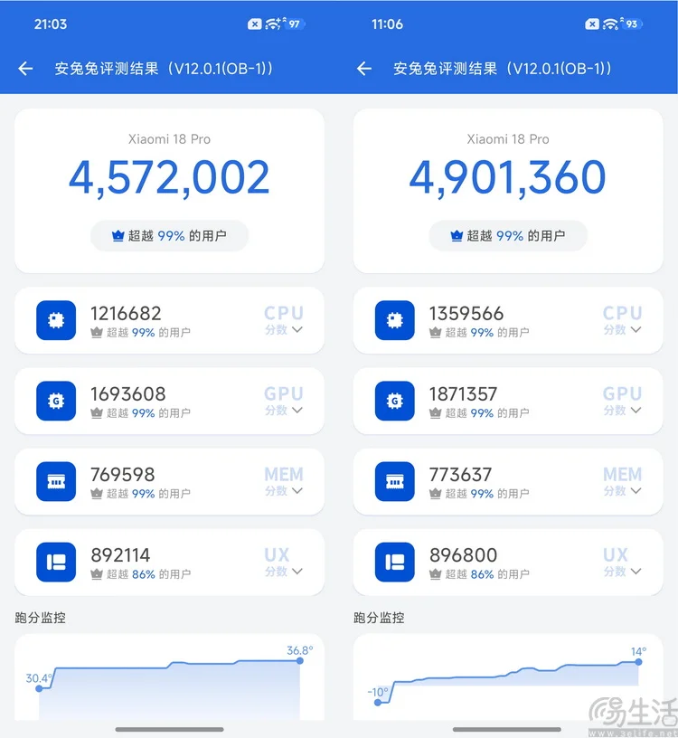
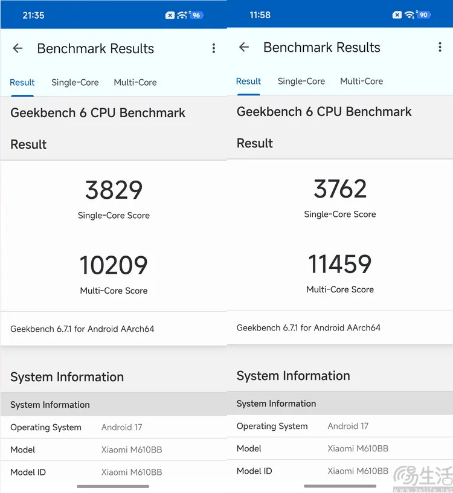
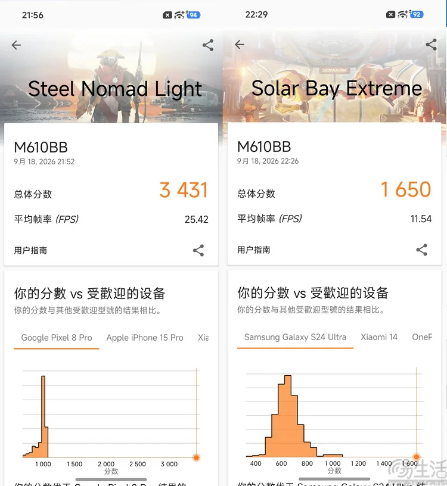
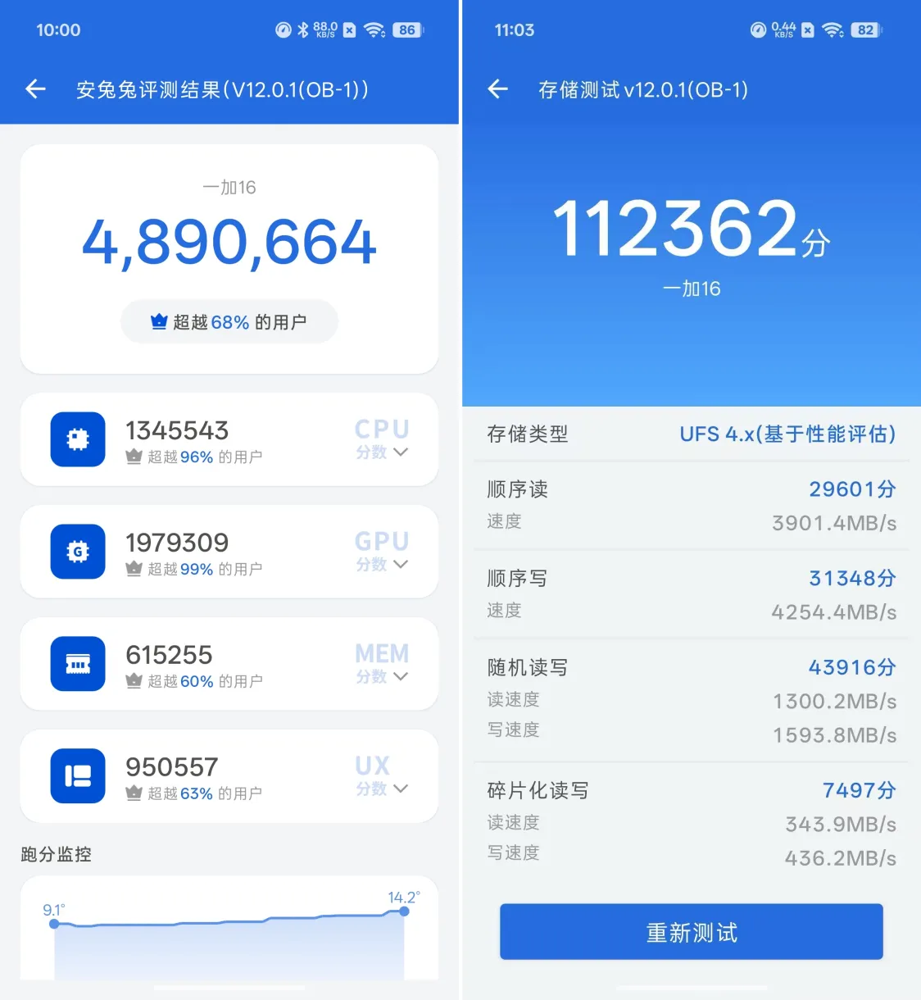
2. اختبارات الألعاب والحرارة واستهلاك الطاقة (مع تحديثات 25 أكتوبر)
- OnePlus 16 (أبرد حرارة وأعلى إطارات 180/185Hz): أظهرت الاختبارات المضافة في تحديث 25 أكتوبر من CNMO وZOL تفوقًا واضحًا لـ OnePlus 16 في ألعاب الإطارات الفائقة؛ ففي PUBG Mobile بوضع 185 إطارًا سجل متوسط 185.08 إطارًا باستهلاك 5.7W وحرارة 40.1°C (CNMO) و184.56 إطارًا بحرارة 39.5°C أمامية / 38.6°C خلفية (AnTuTu). وفي Genshin Impact بوضع 180 إطارًا لمدة ساعة كاملة حافظ على 180.75 إطارًا باستهلاك 4.1W فقط (CNMO). وفي اختبارات ZOL سجل 185.36 إطارًا في CrossFire، و184.78 إطارًا في Arena Breakout، و164.92 إطارًا في Call of Duty Mobile، و145.27 إطارًا في Honor of Kings بحرارة 37.9°C (وفي وضع 165 لدى AnTuTu سجل 167.09 إطارًا بحرارة 34.9°C).
- iQOO 16 (كفاءة 60Hz ورفع الدقة عبر شريحة Q4): في الألعاب القياسية، حقق iQOO 16 استهلاكًا منخفضًا جدًا في Genshin Impact بلغ 3.81W عند 59.83 إطارًا (AnTuTu) وحرارة 39.5°C (TechWeb)، وفي Star Rail خفّضت شريحة Q4 الاستهلاك من 7.32W (عند 59.14 إطارًا) إلى 6.71W مع رفع الإطارات إلى 89.75 إطارًا. وفي Arena Breakout بوضع 165 إطارًا سجل 165.36 إطارًا بقدرة 4.03W وحرارة 40.6°C (三易生活).
- Xiaomi 18 Pro (أقل استهلاك طاقة بفضل الحجم الصغير ودقة 1.5K): في اختبارات 三易生活، سجل Xiaomi 18 Pro أقل استهلاك طاقة بين الأربعة: في Honor of Kings (120Hz) استهلك 2.05W فقط بمتوسط 119.89 إطارًا وارتفاع حرارة دون 7 درجات (ومع الدقة الفائقة 119.96 إطارًا بـ 3.52W)، وفي Arena Breakout (120Hz) سجل 119.85 إطارًا بـ 2.10W. وفي Star Rail سجل 59.78 إطارًا بقدرة 4.57W، وعند تفعيل توليد الإطارات وصل إلى 89.17 إطارًا مع انخفاض الاستهلاك إلى 4.11W، وفي Wuthering Waves (鸣潮) سجل 59.37 إطارًا بقدرة 6.17W (مقابل 6.86W في OnePlus 16 و8.27W في iQOO 16). وفي اختبار 驱动中国 لـ Star Rail لمدة 30 دقيقة سجل 59.4 إطارًا بـ 5.06W وأقصى حرارة في منطقة الإمساك 38.4°C.
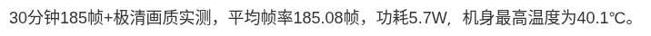
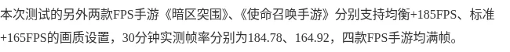
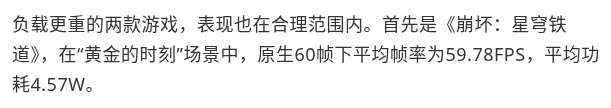

3. البطارية والشحن: أرقام التجربة الفعلية
- OnePlus 16 يتصدر هواتف 8 Elite Extreme Gen 6 في اختبار 新评科技 الجديد (23 أكتوبر): في اختبار التحمّل المستمر من 100% حتى انطفاء الهاتف على النسخة التجارية، صمد OnePlus 16 لمدة 7 ساعات و59 دقيقة ليحتل المركز التاسع بين 150 هاتفًا والأول بين جميع هواتف Snapdragon 8 Elite Extreme Gen 6 في قاعدة بيانات 新评科技. وفي اختبار 6 ساعات لدى AnTuTu بقي فيه 69%، كما يتصدر سرعة الشحن الفعلي بامتلاء بطاريته البالغة 9,000mAh في 54 دقيقة لدى AnTuTu (و62 دقيقة في غرفة 25°C لدى 充电头网، مع دعم شحن عام 100W UFCS و55W PPS).
- iQOO 16 (بطارية 8,400mAh قريبة جدًا من OnePlus، وشحن أبطأ قليلًا): حقق بقاء 68% بعد 6 ساعات في اختبار AnTuTu (بفارق 1% فقط عن OnePlus 16 بفضل كفاءة شاشة 2K LEAD 2.0)، وبقاء 86% بعد 3 ساعات في TechWeb. أما الشحن الكامل 100W فيستغرق 67 دقيقة لدى 三易生活 و77 دقيقة لدى 充电头网 (أو 61 دقيقة عند تفعيل وضع الشحن الفائق يدويًا).
- HONOR WIN Turbo 2 (بطارية 12,070mAh بانتظار طرح 30 أكتوبر): لم تبدأ مبيعات WIN Turbo 2 بعد (تبدأ 30 أكتوبر)، لذا لم تُنشر له اختبارات مستقلة. لكن شقيقه HONOR WIN RT 2 الذي يحمل البطارية نفسها تمامًا (12,070mAh نموذجية / 11,790mAh اسمية مع شحن 90W) تصدّر جميع قوائم البطارية في الصين بتحقيقه 10 ساعات و42 دقيقة حتى الإغلاق لدى 新评科技، و11 ساعة و47 دقيقة لدى 小白测评، وأكثر من 15 ساعة لدى Geekerwan. وبما أن WIN Turbo 2 يعمل بمعالج 8s Gen 4 ومن دون مروحة تستهلك طاقة، يُتوقع أن يقدم تحمّلًا مماثلًا أو أطول، مع التنبيه إلى أنه يفتقر للشحن اللاسلكي.
- Xiaomi 18 Pro (بطارية 7,000mAh في جسم صغير): رغم أنها الأصغر سعة في هذه المقارنة (7,000mAh)، فإن وضعها داخل هيكل بعرض 72 مم ووزن 203 غرامات يُعد إنجازًا هندسيًا، وقد نالت البطارية تقييمًا يفوق 9/10 من الملّاك على Coolapk، مع بقاء 45% في اختبار التحمل الطويل المنشور لدى 驱动中国، ودعم شحن 100W PPS عام و50W لاسلكي.
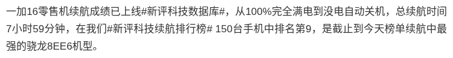

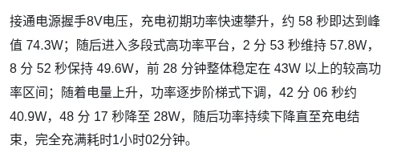
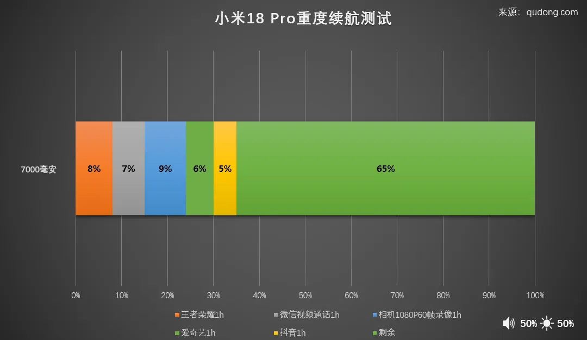
4. الكاميرات والشاشات وتجارب الملّاك في الصين
- تفوق Xiaomi 18 Pro في الكاميرات، وأزمة «شاشة الخصوصية»: يتفوق Xiaomi 18 Pro بوضوح في عتاد التصوير؛ فهو الوحيد هنا بكاميرتين بدقة 200MP (رئيسية بمستشعر كبير 1/1.28 بوصة f/1.67، وبيريسكوب 75 مم 3.2x يدعم الماكرو من مسافة 12 سم) مع معايرة Leica وشاشة خلفية 2.7 بوصة تتيح التقاط السيلفي بالكاميرات الخلفية. لكن تقييمه العام لدى الملّاك على Coolapk هبط إلى 7.5/10 بسبب طبقة الخصوصية المدمجة في الشاشة الأمامية التي نالت 5.4/10 فقط نتيجة انخفاض السطوع وميل الألوان للأخضر من الزوايا وإرهاق العين، حتى إن المستخدمين طالبوا رئيس شاومي بنسخة عادية بلا طبقة خصوصية (Sina Finance / Sohu).
- موازنة OnePlus 16 وiQOO 16 في التصوير والشاشة: يجمع OnePlus 16 كاميرا رئيسية 200MP (1/1.4 بوصة) مع بيريسكوب 50MP 3x، وحصل على تقييم 9.4/10 (ثم 9.3) على Coolapk، حيث أشاد الملّاك بالبطارية (9.8/10) والأداء (9.5/10)، بينما انحصر عتبه السعري في قفزة السعر مقارنة بجيل OnePlus 15 وبعض بلاغات الحرارة بعد التحديث 17.0.0.152. أما iQOO 16 فيقدم ثلاث كاميرات 50MP (رئيسية 1/1.3 بوصة + بيريسكوب 73 مم 3x + واسعة) ويتفوق بشاشة سامسونج 2K M16 ذات السطوع الفعلي الكاسح (2,749 شمعة في AnTuTu) وتقييم 9.9/10 على ZOL، مع دعم نطاق LTE Band 20 الغائب عن النسخة الصينية من OnePlus 16.
- التنازلات الواضحة في HONOR WIN Turbo 2 مقابل السعر: للوصول إلى سعر ¥3,199 مع بطارية 12,070mAh وشاشة 2K 185Hz ومقاومة IP69K، يتنازل الهاتف عن الكاميرا المقرّبة تمامًا، ويكتفي بمستشعر رئيسي صغير 50MP (1/2 بوصة) وواسعة 12MP، ومنفذ USB 2.0، وبلا شحن لاسلكي ولا مروحة تبريد.

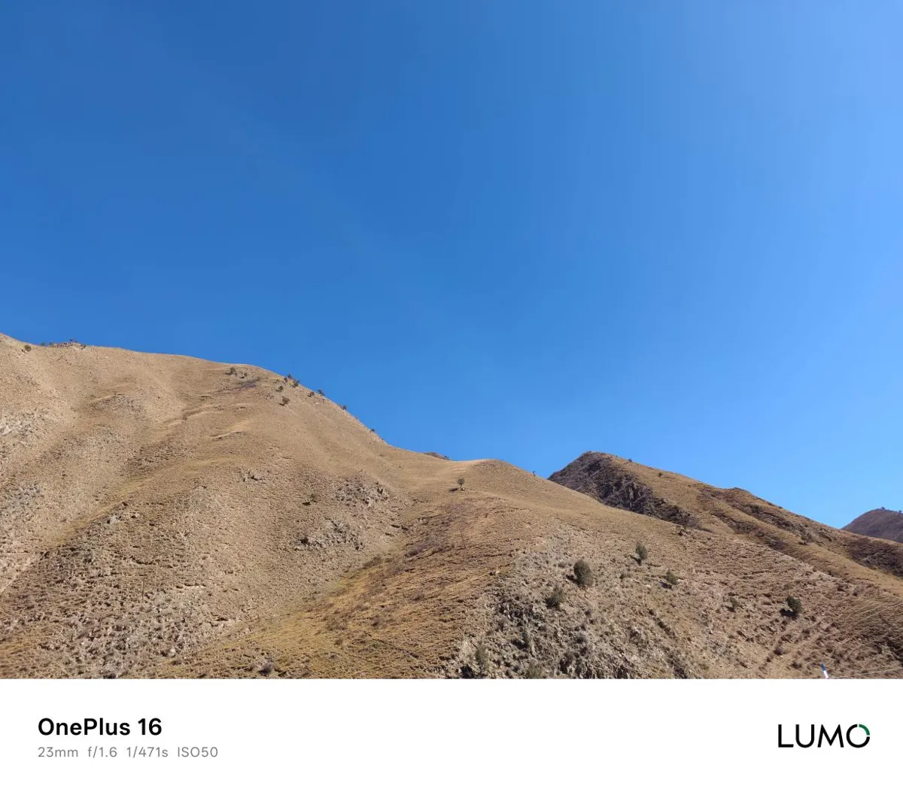
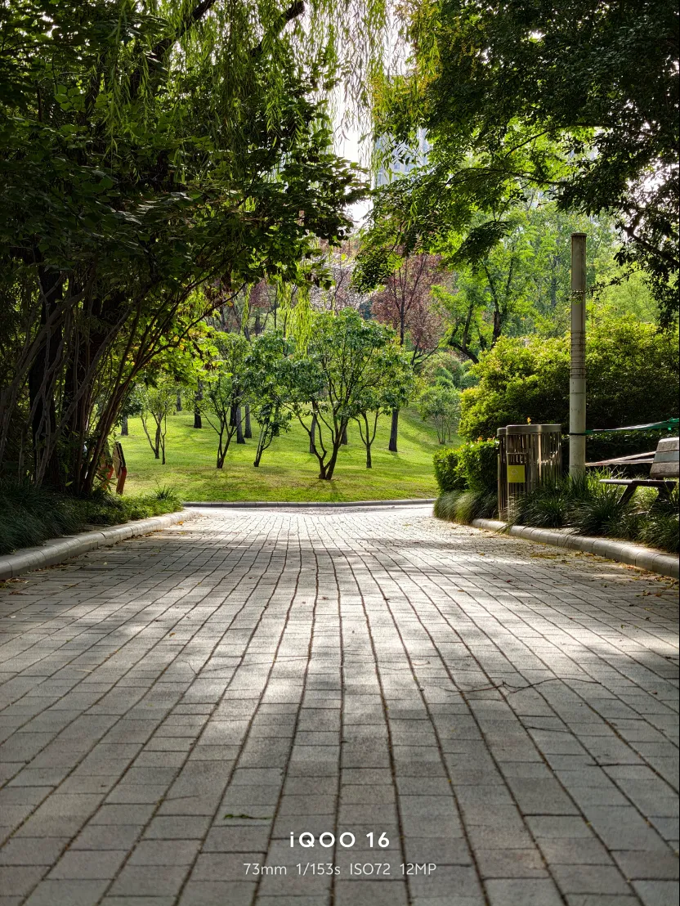
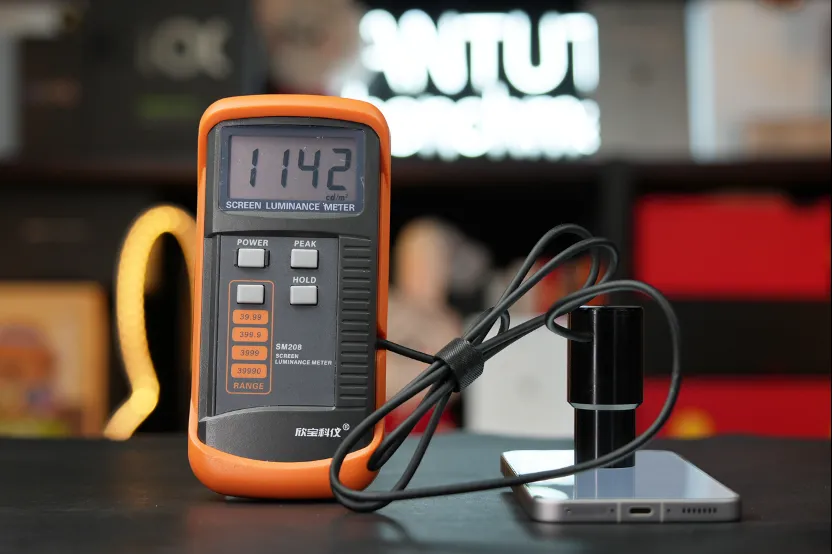
5. جميع فئات الأسعار الرسمية بالدولار والريال
| الهاتف والنسخة | السعر الرسمي في الصين | بالدولار | بالريال السعودي |
|---|---|---|---|
| HONOR WIN Turbo 2 (8GB + 256GB — سعر الإطلاق الأول) | ¥3,199 | 478$ | 1,793 ريال |
| HONOR WIN Turbo 2 (8GB + 256GB — السعر الرسمي) | ¥3,499 | 523$ | 1,962 ريال |
| HONOR WIN Turbo 2 (12GB + 256GB — سعر الإطلاق الأول) | ¥3,499 | 523$ | 1,962 ريال |
| HONOR WIN Turbo 2 (16GB + 256GB — سعر الإطلاق الأول) | ¥3,899 | 583$ | 2,186 ريال |
| HONOR WIN Turbo 2 (12GB + 512GB — سعر الإطلاق الأول) | ¥4,199 | 628$ | 2,354 ريال |
| HONOR WIN Turbo 2 (16GB + 512GB — سعر الإطلاق الأول) | ¥4,499 | 673$ | 2,522 ريال |
| HONOR WIN Turbo 2 (16GB + 512GB — السعر الرسمي) | ¥4,799 | 717$ | 2,690 ريال |
| iQOO 16 (12GB + 256GB) | ¥5,999 | 897$ | 3,363 ريال |
| iQOO 16 (12GB + 512GB) | ¥6,799 | 1,016$ | 3,811 ريال |
| iQOO 16 (16GB + 512GB) | ¥7,499 | 1,121$ | 4,204 ريال |
| iQOO 16 (16GB + 1TB) | ¥8,499 | 1,271$ | 4,764 ريال |
| OnePlus 16 (12GB + 256GB) | ¥5,999 | 897$ | 3,363 ريال |
| OnePlus 16 (12GB + 512GB) | ¥6,799 | 1,016$ | 3,811 ريال |
| OnePlus 16 (16GB + 512GB) | ¥7,499 | 1,121$ | 4,204 ريال |
| OnePlus 16 (16GB + 1TB) | ¥8,499 | 1,271$ | 4,764 ريال |
| Xiaomi 18 Pro (12GB + 256GB) | ¥5,999 | 897$ | 3,363 ريال |
| Xiaomi 18 Pro (16GB + 1TB) | ¥8,999 | 1,345$ | 5,045 ريال |
سعر الصرف: 1 يوان = 0.149493 دولار = 0.560594 ريال سعودي (open.er-api.com، تحديث 22 أكتوبر 2026، 04:02 بتوقيت مسقط). الأسعار المحوّلة تقريبية ولا تشمل الشحن والجمارك. مع الدعم الحكومي داخل الصين تنخفض أسعار الإطلاق إلى ¥2,251.65 لـ WIN Turbo 2، و¥5,199 لـ OnePlus 16، و¥5,499 لكل من iQOO 16 وXiaomi 18 Pro.
من يشتري أي هاتف؟
- HONOR WIN Turbo 2: صاحب أعلى قيمة للميزانية المحدودة (أقل من 500 دولار في نسخة 8+256GB) لمن يريد بطارية 12,070mAh وشاشة 2K بتردد 185Hz ومقاومة ماء IP69K، ولا يمانع معالجًا أقل درجة (8s Gen 4) وغياب عدسة التقريب والشحن اللاسلكي، مع نصيحتنا بانتظار اختبارات ما بعد طرح 30 أكتوبر.
- OnePlus 16: الأفضل توازنًا عند سعر ¥5,999 لمن يريد أطول بطارية مُختبرة فعليًا بين هواتف 8 Elite Extreme Gen 6 (7 ساعات و59 دقيقة في 新评科技)، وأسرع شحن كامل (54 دقيقة)، وأبرد حرارة في ألعاب 180/185Hz، وكاميرا رئيسية 200MP مع بيريسكوب 3x، مع الانتباه لغياب نطاق LTE Band 20 في النسخة الصينية.
- iQOO 16: الخيار الأفضل عند ¥5,999 لمن يفضّل شاشة 2K حقيقية بسطوع 2,749 شمعة وتعتيم DC كامل، وكاميرات ثلاثية متوازنة بدقة 50MP، ودعم نطاقات الشبكات الأوسع في الخليج (بما فيها Band 20).
- Xiaomi 18 Pro: الخيار الوحيد لمحبي الهواتف المدمجة (6.4 بوصة و203 غرامات) ومن يريد أقوى عتاد كاميرات في هذه الفئة السعرية (كاميرتان 200MP وشاشة خلفية)، بشرط معاينة شاشة الخصوصية أولًا للتأكد من تقبّل زوايا رؤيتها وسطوعها، وتجنّب الضغط الاصطناعي الطويل على المعالج.
تقييمات المصادر الصينية والمراجعات المفصلة
- iQOO 16 بعد ثلاثة أسابيع في الصين: شاشة 2K بتردد 165 هرتز وبطارية 8400 مللي أمبير… ماذا تقول الاختبارات والملاك؟ — المصادر: AnTuTu، 充电头网، 三易生活.
- ون بلس 16 بعد أسبوع من طرحه في الصين: ماذا يقول الملاك عن بطارية 9000 مللي أمبير والشاشة 185 هرتز؟ — المصادر: AnTuTu، 新评科技 عبر Sina، CNMO، ZOL، 充电头网، 三易生活.
- هونر WIN Turbo 2 وWIN RT 2 وWIN 2: ثلاثة هواتف ألعاب بشاشة 185Hz وبطاريات حتى 12,070mAh — المصادر: 新评科技، 小白测评، Geekerwan (لسلسلة WIN؛ ويبدأ بيع Turbo 2 في 30 أكتوبر).
- شاومي 18 برو: هاتف رائد بحجم 6.4 بوصة وبطارية 7000 مللي أمبير، والحرارة والشاشة محل خلاف — المصادر: 三易生活، 驱动中国.
آخر تحديث للتقييمات والاختبارات: 25 أكتوبر 2026
#midroid5G #القيمة_مقابل_السعر #تقنية